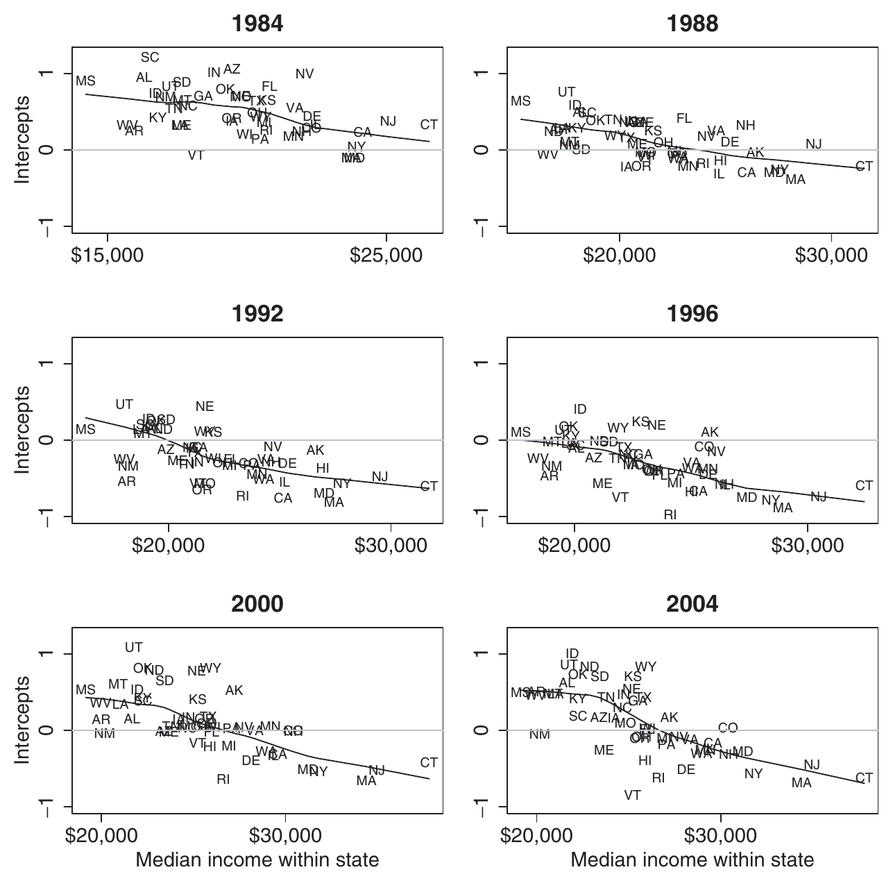
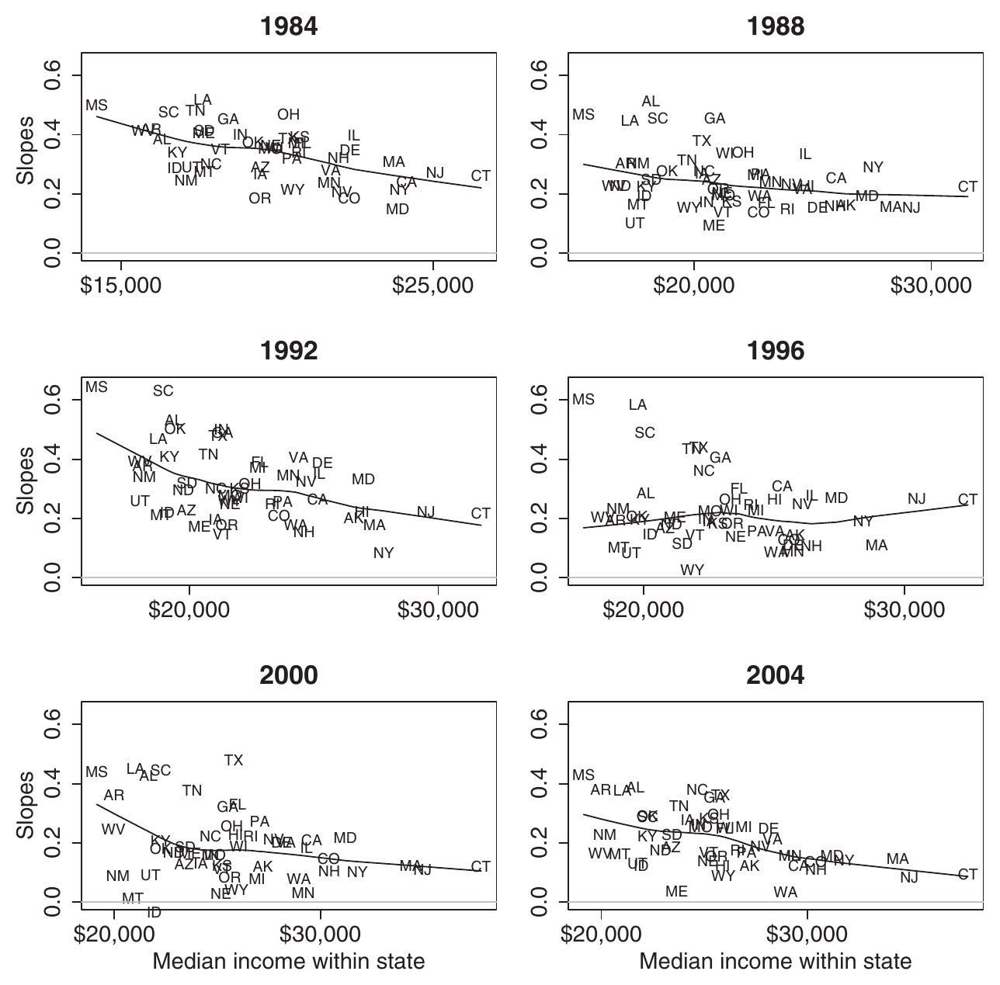
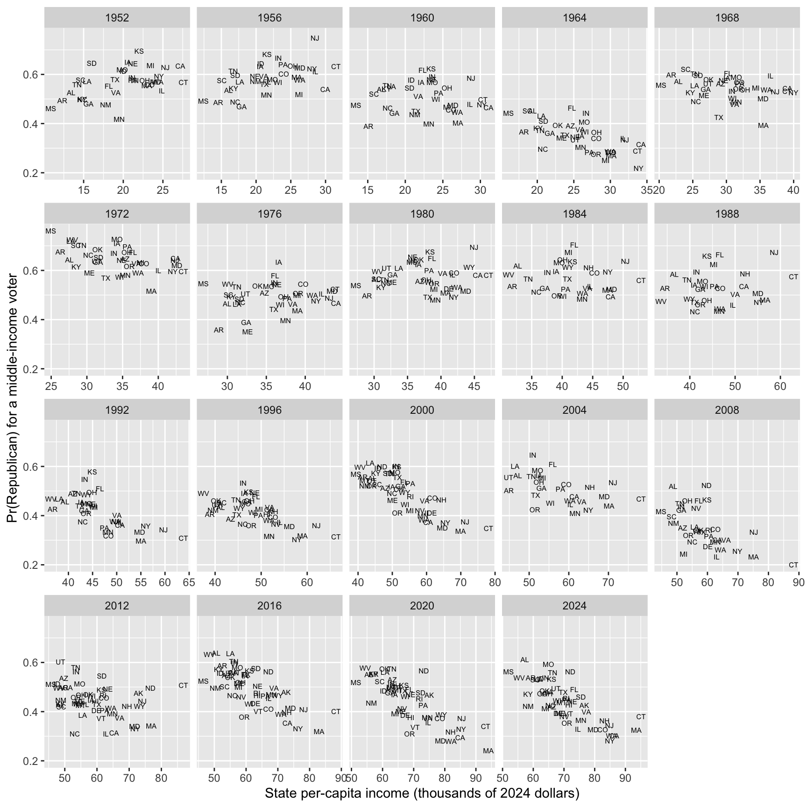
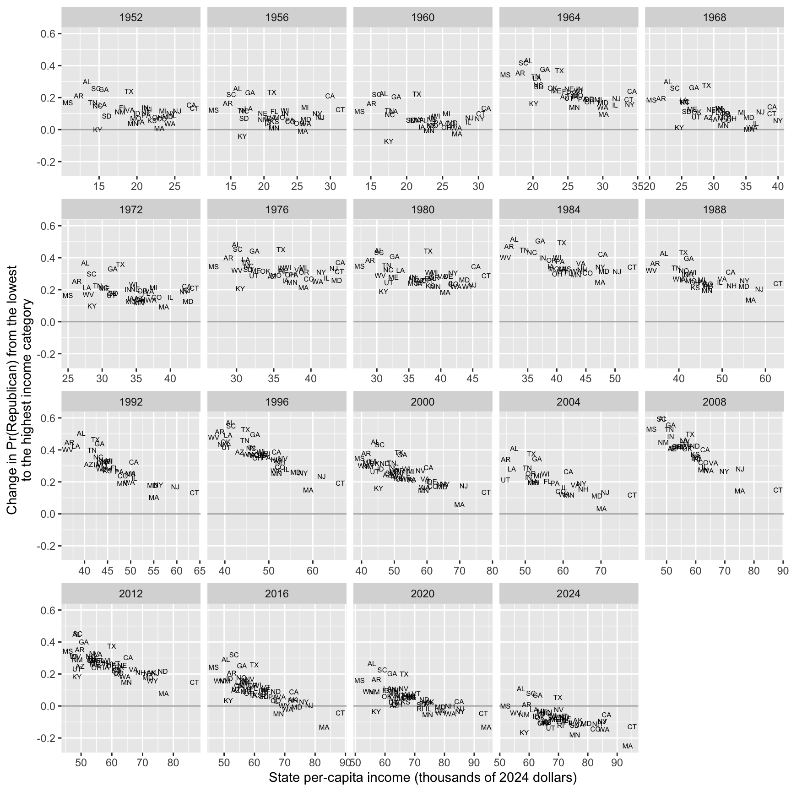

Complete solutions open Sunday, November 15 at 12:00 PM
Exercise 1 Simulate and Recover; Multinomial Logit
One important way to test and develop your understanding of statistical models and quantities of interest is to simulate a fake data set with known true quantity of interest (e.g., coefficients or first difference) and then recover that quantity of interest through your estimation procedure.
We did this for logit in Week 9, for ordered logit in Week 10, and for negative binomial in Week 11. Do this for the multinomial logit model in the notes.
As your quantities of interest, use the probability of each category, \(\Pr(y = \text{A})\), \(\Pr(y = \text{B})\), and \(\Pr(y = \text{C})\), when x1 equals 1 and x2 equals "Label 1".
First, simulate a fake data set with known coefficients and quantities of interest. Write this code yourself; adapt your Week 10 code. In the solution, I use the values below, but you can choose different values if you like.
n = 10,000.
x1: standard normal.
x2: "Label 1" (about 75%) or "Label 2" (about 25%).
Three categories, "A", "B", and "C", with "A" the baseline (i.e., \(\eta_{i\text{A}} = 0\)). multinom() uses the first level of the factor as the baseline. (The notes fix the last category instead; the choice doesn’t change the probabilities.)
Coefficients for "B": 0.5 for the intercept, 0.5 for x1, and −1 for x2 = "Label 2".
Coefficients for "C": −0.5 for the intercept, 1 for x1, and 0.5 for x2 = "Label 2".
y a factor, in a data frame named data.
Compute the true probabilities from the true values.
Second, use nnet::multinom() to fit a multinomial logit model to the fake data. Are the true coefficients inside their 90% confidence intervals? (summary(fit)$standard.errors returns the SEs.)
Third, use predictions() to recover the three true probabilities. Are the true values inside their 90% CIs?
Fourth, adapt the code to compute the true first difference in each probability as x1 moves from −1 to 1 (with x2 equal to "Label 1"). Then recover them with comparisons().
Hint
Use the softmax to turn the three linear predictors into probabilities. For each observation, sample(c("A", "B", "C"), size = 1, prob = p[i, ]) draws one category, where p is a matrix of probabilities with one row per observation and one column per category.
Complete solution
Part 1
Your code will differ. Here is one version.
# --- simulate a fake data set ---# set seed for reproducibilityset.seed(1234)# set sample sizen <-10000# needs to be large enough so that CI isn't super wide# create explanatory variables## numeric variablex1 <-rnorm(n)## qualitative variablex2 <-sample(c("Label 1", "Label 2"),size = n,replace =TRUE,prob =c(0.75, 0.25)) # about 75% will be "Label 1"# create coefficients: intercept, x1, and x2 = "Label 2"; "A" is the baselineb_B <-c(0.5, 0.5, -1)b_C <-c(-0.5, 1, 0.5)# linear predictors; the baseline's is zeroeta_A <-rep(0, n)eta_B <- b_B[1] + b_B[2]*x1 + b_B[3]*(x2 =="Label 2")eta_C <- b_C[1] + b_C[2]*x1 + b_C[3]*(x2 =="Label 2")# softmax: category probabilities; one row per observationp <-cbind(exp(eta_A), exp(eta_B), exp(eta_C))p <- p /rowSums(p)# simulate outcome for multinomial logit model; one draw per observationy <-numeric(n)for (i in1:n) { y[i] <-sample(c("A", "B", "C"), size =1, prob = p[i, ])}# combine into data frame; levels are alphabetical, so "A" is the first leveldata <-data.frame(y =factor(y), x1, x2)# truth: Pr(y = j) when x1 = 1 and x2 = "Label 1" (so the x2 terms are zero)eta_c <-c(0, b_B[1] + b_B[2]*1, b_C[1] + b_C[2]*1)exp(eta_c) /sum(exp(eta_c))
[1] 0.1863237 0.5064804 0.3071959
The true probabilities are about 0.186 for A, 0.506 for B, and 0.307 for C.
Part 2
# fit multinomial logit modelfit <- nnet::multinom(y ~ x1 + x2, data = data, trace =FALSE)# estimates and 90% cis for the coefficients; one row per non-baseline categoryest <-coef(fit)se <-summary(fit)$standard.errorscbind(truth =c(b_B, b_C),estimate =c(t(est)),lower =c(t(est -1.645*se)),upper =c(t(est +1.645*se))) |>round(3)
The first three rows are for B and the last three are for C. All six true values are inside their 90% confidence intervals. The true value of B’s x1 coefficient (i.e., 0.5) is only barely inside its interval (about 0.499 to 0.586).
Part 3
# recover Pr(y = j) when x1 = 1 and x2 = "Label 1"predictions(fit,newdata =datagrid(x1 =1, x2 ="Label 1"),conf_level =0.9)
Group x1 x2 Estimate Std. Error z Pr(>|z|) S 5.0 % 95.0 %
A 1 Label 1 0.182 0.00589 30.8 <0.001 691.4 0.172 0.191
B 1 Label 1 0.515 0.00789 65.3 <0.001 Inf 0.502 0.528
C 1 Label 1 0.303 0.00730 41.5 <0.001 Inf 0.291 0.315
Type: probs
predictions() returns one row per category (group). The estimates are about 0.182 (A), 0.515 (B), and 0.303 (C). All three true values are inside their 90% CIs.
Part 4
# truth: fd in Pr(y = j) as x1 moves from -1 to 1; x2 = "Label 1"eta_hi <-c(0, b_B[1] + b_B[2]*1, b_C[1] + b_C[2]*1)eta_lo <-c(0, b_B[1] + b_B[2]*(-1), b_C[1] + b_C[2]*(-1))exp(eta_hi)/sum(exp(eta_hi)) -exp(eta_lo)/sum(exp(eta_lo))
Group x2 Estimate Std. Error z Pr(>|z|) S 5.0 % 95.0 %
A Label 1 -0.2792 0.00979 -28.52 <0.001 592.1 -0.2953 -0.2631
B Label 1 0.0736 0.01091 6.74 <0.001 35.9 0.0556 0.0915
C Label 1 0.2056 0.00790 26.04 <0.001 494.3 0.1927 0.2186
Term: x1
Type: probs
Comparison: 1 - -1
The true first differences are about −0.263 (A), 0.057 (B), and 0.207 (C). The estimates are about −0.279, 0.074, and 0.206. All three true values are inside their 90% CIs (A and B only barely).
Notice that the three first differences add up to zero, because the three probabilities always add up to one.
Exercise 2 The Difference in Means and Neyman’s Variance Estimator
This exercise asks you to show two results from the ATE slides.
We have \(N\) units in an experiment. We assign \(N_t\) of them to treatment (\(W_i = 1\)) and the other \(N_c = N - N_t\) to control (\(W_i = 0\)), completely at random. Each unit has two potential outcomes, \(Y_i(1)\) and \(Y_i(0)\). These are fixed numbers. The only random variables are the \(W_i\). The average treatment effect is
Because \(Y_i^{\text{obs}} = Y_i(1)\) if \(W_i = 1\) and \(Y_i^{\text{obs}} = Y_i(0)\) if \(W_i = 0\), we can write \(\widehat{\text{ATE}}\) as a function of the \(W_i\).
Here, \(\overline{Y}(1)\) and \(\overline{Y}(0)\) are the averages of the \(Y_i(1)\) and the \(Y_i(0)\) across all \(N\) units. \(S_t^2\) is the variance of the potential outcomes under treatment, \(S_c^2\) is the variance of the potential outcomes under control, and \(S_{tc}^2\) is the variance of the unit-level treatment effects.
Under the sharp null hypothesis of no effect for any unit (i.e., \(Y_i(1) = Y_i(0)\) for every unit \(i\)), Neyman’s variance estimator is unbiased.
Under constant effects (i.e., \(Y_i(1) - Y_i(0) = \tau\) for every unit \(i\), where \(\tau\) is a constant), Neyman’s variance estimator is unbiased.
For any potential outcomes, Neyman’s variance estimator is unbiased or conservative. That is, \(E_W\left[\widehat{\text{Var}}(\widehat{\text{ATE}})\right] \geq \text{Var}_W (\widehat{\text{ATE}})\).
Hint 1
For Part (a), the \(Y_i(1)\) and \(Y_i(0)\) are constants, so you need only \(E_W(W_i)\). Every unit has the same chance of being one of the \(N_t\) treated units. What is \(\Pr(W_i = 1)\)?
Hint 2
For Part (b), start by computing \(E_W\left[\widehat{\text{Var}}(\widehat{\text{ATE}})\right]\) using the unbiasedness of \(s_t^2\) and \(s_c^2\). Compare it with \(\text{Var}_W (\widehat{\text{ATE}})\). The two differ by one term.
Complete solution
Part (a)
The potential outcomes are constants, so we can move the expectation inside the sum and we only need the expected values of the \(W_i\).
\(W_i\) is 0 or 1, so \(E_W(W_i) = \Pr(W_i = 1)\). In a completely randomized experiment, each unit is equally likely to be one of the \(N_t\) treated units, so \(\Pr(W_i = 1) = N_t/N\). Then \(E_W(1 - W_i) = 1 - N_t/N = N_c/N\). Substituting,
So each of the three parts comes down to what we know about \(S_{tc}^2\).
Under the sharp null, \(Y_i(1) - Y_i(0) = 0\) for every unit, so \(\overline{Y}(1) - \overline{Y}(0) = 0\) as well. Every term in \(S_{tc}^2\) is \((0 - 0)^2 = 0\), so \(S_{tc}^2 = 0\) and the bias is zero.
Under constant effects, \(Y_i(1) - Y_i(0) = \tau\) for every unit, so \(\overline{Y}(1) - \overline{Y}(0) = \frac{1}{N}\sum_{i=1}^N \tau = \tau\). Every term in \(S_{tc}^2\) is \((\tau - \tau)^2 = 0\), so \(S_{tc}^2 = 0\) and the bias is zero. (The sharp null is the special case \(\tau = 0\).)
\(S_{tc}^2\) is a sum of squares divided by \(N - 1\), so \(S_{tc}^2 \geq 0\) for any potential outcomes. Then the bias \(S_{tc}^2/N \geq 0\), so \(E_W\left[\widehat{\text{Var}}(\widehat{\text{ATE}})\right] \geq \text{Var}_W (\widehat{\text{ATE}})\). The estimator is exactly unbiased only when \(S_{tc}^2 = 0\), which happens only when every unit’s effect equals the ATE (i.e., constant effects). Otherwise it’s conservative. We can’t do better without assumptions, because we never observe both \(Y_i(1)\) and \(Y_i(0)\) for the same unit, so we can’t estimate \(S_{tc}^2\).
Exercise 3 Making Neyman’s Variance Estimator Go Wrong
In Exercise 2, you showed that Neyman’s variance estimator is unbiased under constant effects and conservative otherwise. How conservative can it be?
The code below creates potential outcomes for 10 units. Because we know both potential outcomes for every unit, we can compute \(S_t^2\), \(S_c^2\), and \(S_{tc}^2\). Then the formulas from Exercise 2 give the actual variance of \(\widehat{\text{ATE}}\) and the expected value of Neyman’s estimator, with 5 of the 10 units assigned to treatment.
# potential outcomes under control for 10 unitsy0 <-c(0, 3, 1, 4, 2, 6, 1, 5, 3, 2)# potential outcomes under treatmenty1 <-0.1*y0 # <-- CHANGE THIS LINE# number of units, treated units, and control unitsN <-length(y0)N_t <-5N_c <- N - N_t# variances of the potential outcomes and of the unit-level effects# (var() divides by N - 1, like the definitions of S_t^2, S_c^2, and S_tc^2)S2_t <-var(y1)S2_c <-var(y0)S2_tc <-var(y1 - y0)# expected value of neyman's estimator and the actual variance of the estimateexpected_neyman <- S2_c/N_c + S2_t/N_tactual_variance <- S2_c/N_c + S2_t/N_t - S2_tc/Nc(ate =mean(y1 - y0),actual_variance = actual_variance,expected_neyman = expected_neyman,ratio = expected_neyman/actual_variance)
ate actual_variance expected_neyman ratio
-2.4300000 0.4315667 0.7204667 1.6694215
When \(Y_i(1) = 0.1 \cdot Y_i(0)\), Neyman’s estimator is about 1.7 times the actual variance, on average.
Change how the code creates y1 (keep y0 the same). What do you need to do to make Neyman’s estimator as bad as possible (i.e., to make ratio as large as possible)?
Hint
We can write the variance of the unit-level treatment effects as
\[
S_{tc}^2 = S_t^2 + S_c^2 - 2\rho S_t S_c,
\]
where \(\rho\) is the correlation between \(Y_i(1)\) and \(Y_i(0)\) across the \(N\) units, and \(S_t\) and \(S_c\) are the square roots of \(S_t^2\) and \(S_c^2\).
Complete solution
Make y1 perfectly negatively correlated with y0, with the same variance. For example, y1 <- 10 - y0.
# perfectly negatively correlated with y0, with the same sdy1 <-10- y0# variances of the potential outcomes and of the unit-level effectsS2_t <-var(y1)S2_c <-var(y0)S2_tc <-var(y1 - y0)# expected value of neyman's estimator and the actual variance of the estimateexpected_neyman <- S2_c/N_c + S2_t/N_tactual_variance <- S2_c/N_c + S2_t/N_t - S2_tc/Nc(ate =mean(y1 - y0),actual_variance = actual_variance,expected_neyman = expected_neyman,ratio = expected_neyman/actual_variance)
ate actual_variance expected_neyman ratio
4.600000 0.000000 1.426667 Inf
The actual variance is zero. (Every unit has \(Y_i(1) + Y_i(0) = 10\) and the two groups are the same size, so every assignment gives the same estimate, the ATE of 4.6.) But Neyman’s estimator is about 1.43 on average, so the ratio is infinite.
Exercise 4 Red State, Blue State: Part 9
In Part 8, we fit Gelman et al.’s (2007) Model 1 to the CES 2024. They fit the same model to exit polls from each election from 1984 to 2004. (Their Figures 7 and 8, pp. 359–360 [pdf], plot each state’s intercept and slope against state income, one panel per election.) They write that the positive income slopes “have persisted for decades, but only since 1992, and especially since 1996, have systematic differences between rich and poor states become so clear” (p. 357). The paper came out in 2007, so 2004 was its last election.
Now use the ANES for every presidential election from 1952 to 2024. (1948 is the first election in the ANES, but it doesn’t record the respondent’s state.)
pc_income: the state’s per-capita personal income in that year, in thousands of 2024 dollars (from the BEA). This is a different measure than Part 8’s state_median_income, which is median household income in 2024 only.
rs_pc_income: pc_income rescaled (with arm::rescale()) across the 50 states in that year.
income: the five-point income scale, −2 to 2.
vote_rep: 1 if the respondent reported voting for the Republican candidate after the election and 0 if they reported voting for the Democrat.
The ANES is small. Each election has 729 to 5,947 voters in 28 to 50 states, and many states have only a handful of voters in a given election. Rather than fit Part 8’s model to each election separately, fit one model that pools across elections.
\(s[i]\) is the state of voter \(i\), \(t[i]\) is the election, and \(z_{st}\) is rs_pc_income.
Each election has its own four coefficients, \(\gamma_{0t}\), \(\gamma_{1t}\), \(\delta_{0t}\), and \(\delta_{1t}\). Across elections, these four are multivariate normal, so each election’s estimates are pulled toward the average across elections. This is the part of the model that pools across time.
\((\eta^{\alpha}_s, \eta^{\beta}_s)\) is state \(s\)’s deviation from the lines in every election. (It has no \(t\) subscript, so it’s the same in every election.) \((\eta^{\alpha}_{st}, \eta^{\beta}_{st})\) is its deviation in election \(t\) only. Both pairs are bivariate normal with mean zero.
In brm(), the formula is vote_rep ~ rs_pc_income * income + (1 + rs_pc_income * income | year) + (1 + income | state_name) + (1 + income | state_name:year).
The model makes two simplifications worth considering. First, it treats the elections as exchangeable. It doesn’t know that 1952 is closer to 1956 than to 2024. (Though we could build that into the model!) Second, the state deviations \((\eta^{\alpha}_s, \eta^{\beta}_s)\) are the same from 1952 to 2024, even though the South moved toward the Republicans over these years. The state-election deviations absorb some of that movement.
Fit the model with brm(). Use family = bernoulli, backend = "cmdstanr", chains = 4, cores = 4, iter = 8000, and warmup = 1000. (The fit takes about 20 minutes on a fast desktop.) Check R-hat and the ESS.
For a middle-income voter (income = 0) in each state the ANES sampled in each election, compute (a) the chance of voting for the Republican with predictions() and (b) the change in that chance as income moves from its minimum to its maximum with comparisons(). Then make Part 8’s two plots, with one panel per election: one with the chance on the y-axis and one with the change on the y-axis, both with pc_income on the x-axis and each state’s abbreviation as its point.
Interpret the plots and compare them with Gelman et al.’s Figures 7 and 8 (below). Their Figure 7 plots each state’s intercept \(\alpha_s\) against state income, and their Figure 8 plots each state’s income slope \(\beta_s\), for each election from 1984 to 2004. (Their figures are on the log-odds scale and yours are on the probability scale, so compare the patterns, not the numbers.)
In which elections are the rich states more Republican than the poor states? In which are they less Republican? Compare your plot of the chance with their Figure 7.
In which elections does individual income matter more in the poor states than in the rich states? Compare your plot of the change with their Figure 8.
The screenshots below show Figures 7 and 8 from the original paper, which are analogous to the figures you created in (b). How have the patterns changed since 2004?

Figure 7 of Gelman et al. (2007, p. 359): each state’s intercept plotted against state income, with the model fit separately to the exit poll from each election.

Figure 8 of Gelman et al. (2007, p. 360): each state’s income slope plotted against state income, with the model fit separately to the exit poll from each election.
Complete solution
Part 1
fit_rs9 <-brm(vote_rep ~ rs_pc_income * income + (1+ rs_pc_income * income | year) + (1+ income | state_name) + (1+ income | state_name:year),data = anes,family = bernoulli,backend ="cmdstanr",iter =2000,warmup =1000,chains =4,cores =4,seed =1234)
summary(fit_rs9, prob =0.9)
Family: bernoulli
Links: mu = logit
Formula: vote_rep ~ rs_pc_income * income + (1 + rs_pc_income * income | year) + (1 + income | state_name) + (1 + income | state_name:year)
Data: anes (Number of observations: 30953)
Draws: 4 chains, each with iter = 2000; warmup = 1000; thin = 1;
total post-warmup draws = 4000
Multilevel Hyperparameters:
~state_name (Number of levels: 50)
Estimate Est.Error l-90% CI u-90% CI Rhat Bulk_ESS
sd(Intercept) 0.20 0.04 0.15 0.27 1.01 897
sd(income) 0.09 0.02 0.06 0.13 1.00 1368
cor(Intercept,income) 0.07 0.26 -0.38 0.49 1.00 1018
Tail_ESS
sd(Intercept) 1843
sd(income) 1585
cor(Intercept,income) 1767
~state_name:year (Number of levels: 725)
Estimate Est.Error l-90% CI u-90% CI Rhat Bulk_ESS
sd(Intercept) 0.28 0.02 0.24 0.31 1.00 1135
sd(income) 0.05 0.03 0.01 0.09 1.01 360
cor(Intercept,income) -0.35 0.38 -0.91 0.35 1.00 1609
Tail_ESS
sd(Intercept) 2141
sd(income) 834
cor(Intercept,income) 1681
~year (Number of levels: 19)
Estimate Est.Error l-90% CI u-90% CI Rhat
sd(Intercept) 0.37 0.07 0.27 0.50 1.00
sd(rs_pc_income) 0.32 0.08 0.21 0.46 1.00
sd(income) 0.18 0.04 0.12 0.24 1.00
sd(rs_pc_income:income) 0.08 0.05 0.01 0.16 1.01
cor(Intercept,rs_pc_income) 0.48 0.21 0.08 0.79 1.00
cor(Intercept,income) -0.15 0.23 -0.51 0.22 1.00
cor(rs_pc_income,income) 0.09 0.25 -0.34 0.48 1.01
cor(Intercept,rs_pc_income:income) 0.33 0.34 -0.32 0.81 1.00
cor(rs_pc_income,rs_pc_income:income) 0.39 0.35 -0.30 0.86 1.00
cor(income,rs_pc_income:income) -0.28 0.35 -0.77 0.37 1.00
Bulk_ESS Tail_ESS
sd(Intercept) 619 1572
sd(rs_pc_income) 1088 1708
sd(income) 1194 1901
sd(rs_pc_income:income) 758 878
cor(Intercept,rs_pc_income) 1384 1955
cor(Intercept,income) 1071 1791
cor(rs_pc_income,income) 727 1281
cor(Intercept,rs_pc_income:income) 2596 2070
cor(rs_pc_income,rs_pc_income:income) 1909 1980
cor(income,rs_pc_income:income) 2508 2712
Regression Coefficients:
Estimate Est.Error l-90% CI u-90% CI Rhat Bulk_ESS Tail_ESS
Intercept -0.01 0.10 -0.18 0.15 1.01 374 529
rs_pc_income -0.09 0.10 -0.26 0.08 1.01 752 1391
income 0.23 0.05 0.15 0.30 1.00 1001 1465
rs_pc_income:income -0.08 0.05 -0.15 0.00 1.01 1371 2061
Draws were sampled using sample(hmc). For each parameter, Bulk_ESS
and Tail_ESS are effective sample size measures, and Rhat is the potential
scale reduction factor on split chains (at convergence, Rhat = 1).
R-hat is 1.00 for every parameter (the largest is 1.002), and the smallest bulk ESS is about 2,640 (the intercept). No divergent transitions.
Part 2
# a middle-income voter in each state the anes sampled in each electiontypical <- anes |>distinct(year, state_name, state_abbr, pc_income, rs_pc_income) |>mutate(income =0)# the chance of voting for the Republicanpr <-predictions(fit_rs9, newdata = typical, conf_level =0.9)# the change in the chance as income moves from its minimum (-2) to its maximum (2)cmp <-comparisons(fit_rs9, variables =list(income ="minmax"), newdata = typical, conf_level =0.9)# combine into one data frame, one row per state-electionqi <- typical |>mutate(pr_rep = pr$estimate,change = cmp$estimate)
# the chance of voting for the Republican by state incomeggplot(qi, aes(x = pc_income, y = pr_rep, label = state_abbr)) +geom_text(size =2) +facet_wrap(vars(year), scales ="free_x") +labs(x ="State per-capita income (thousands of 2024 dollars)",y ="Pr(Republican) for a middle-income voter")

# the change in the chance by state incomeggplot(qi, aes(x = pc_income, y = change, label = state_abbr)) +geom_hline(yintercept =0, color ="grey70") +geom_text(size =2) +facet_wrap(vars(year), scales ="free_x") +labs(x ="State per-capita income (thousands of 2024 dollars)",y ="Change in Pr(Republican) from the lowest\nto the highest income category")

Part 3
Gelman et al.’s Figures 7 and 8 show three patterns from 1984 to 2004:
Poor states are more Republican than rich states.
Richer voters are more Republican in every state.
Income matters more in poor states.
After 2004:
Poor states are still more Republican than rich states. In every election from 2008 to 2024, the chance that a middle-income voter votes Republican falls as state income rises.
By 2024, the change from the lowest to the highest income category is negative in 43 of the 49 states. Richer voters are no longer more Republican within most states.
Income still has a more positive (less negative?) effect in poor states. But the change now runs from about zero in the poor states to negative in the rich states, rather than being positive everywhere.